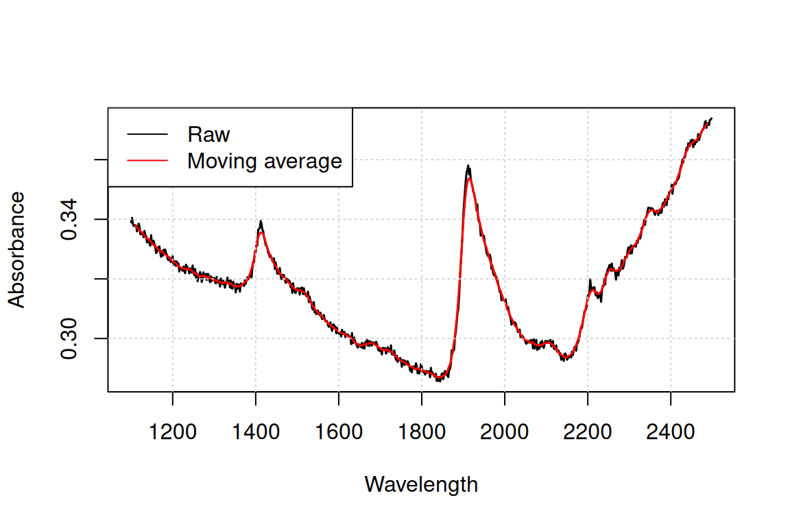
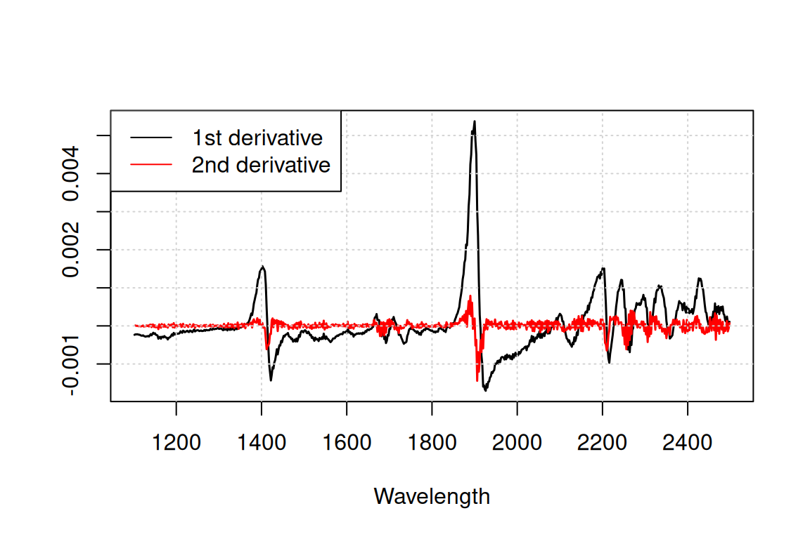
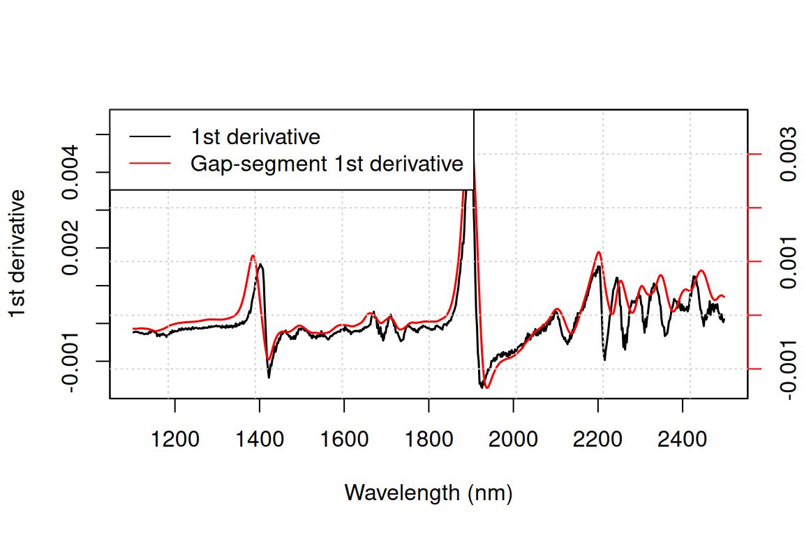
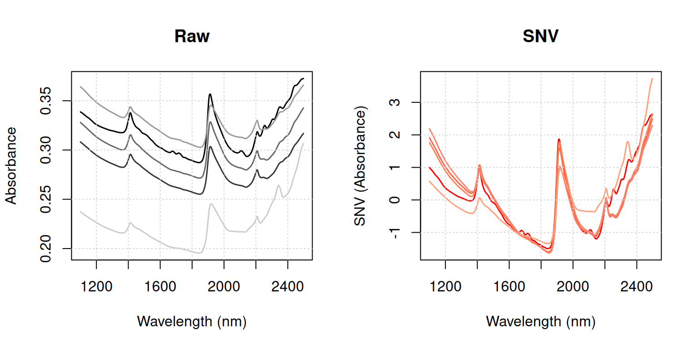
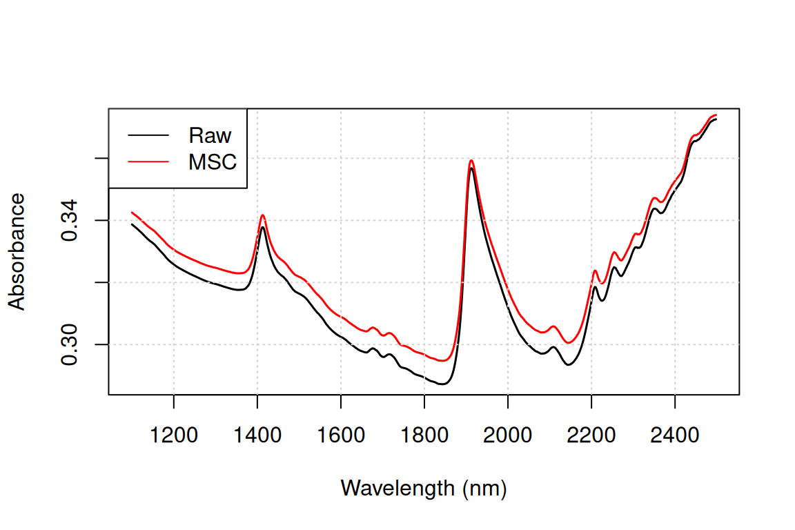
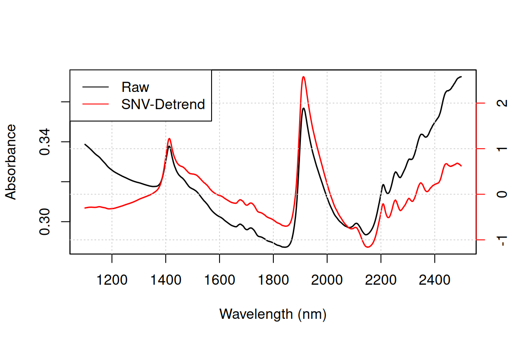
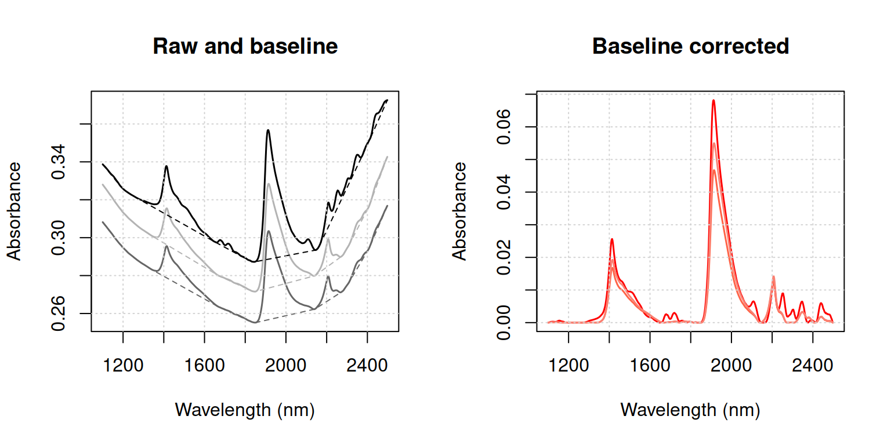
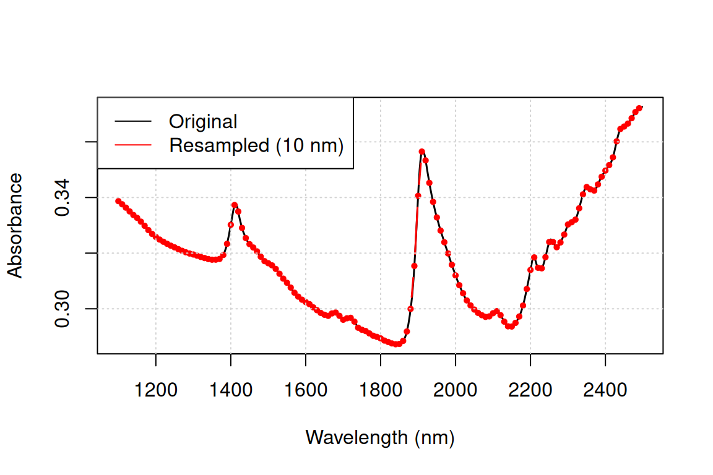
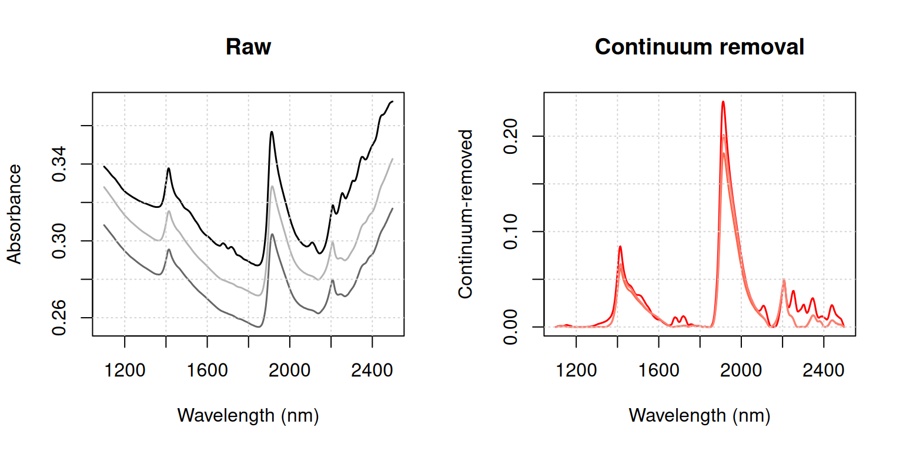

| Function | Description |
|---|---|
movav |
Simple moving (or running) average filter |
savitzkyGolay |
Savitzky–Golay smoothing and derivative |
gapDer |
Gap–segment derivative |
baseline |
Baseline removal (similar to continuumRemoval) |
continuumRemoval |
Computes continuum–removed values |
detrend |
Detrend normalisation |
standardNormalVariate |
Standard Normal Variate (SNV) transformation |
msc |
Multiplicative Scatter Correction |
binning |
Average a signal in column bins |
resample |
Resample a signal to new band positions |
resample2 |
Resample a signal using new FWHM values |
blockScale |
Block scaling |
blockNorm |
Sum of squares block weighting |
Organism is opposed to chaos… as message is to noise. – (Wiener, 1954)
1 Introduction
The aim of spectral pre-treatment is to improve signal quality before modelling as well as remove physical information from the spectra. Applying a pre-treatment can increase the repeatability/reproducibility of the method, model robustness and accuracy, although there are no guarantees this will actually work. The pre-processing functions currently available in the package are listed in Table 1.
We show below how they can be used, using the Near-Infrared (NIR) dataset (NIRsoil) included in the package (Fernandez-Pierna and Dardenne, 2008). Observations should be arranged row-wise.
library(prospectr)
data(NIRsoil)
# NIRsoil is a data.frame with 825 observations and 5 variables:
# Nt (Total Nitrogen), Ciso (Carbon), CEC (Cation Exchange Capacity),
# train (0/1 indicator for training (1) and validation (0) samples),
# spc (spectral matrix)
str(NIRsoil)'data.frame': 825 obs. of 5 variables:
$ Nt : num 0.3 0.69 0.71 0.85 NA ...
$ Ciso : num 0.22 NA NA NA 0.9 NA NA 0.6 NA 1.28 ...
$ CEC : num NA NA NA NA NA NA NA NA NA NA ...
$ train: num 1 1 1 1 1 1 1 1 1 1 ...
$ spc : num [1:825, 1:700] 0.339 0.308 0.328 0.364 0.237 ...
..- attr(*, "dimnames")=List of 2
.. ..$ : chr [1:825] "1" "2" "3" "4" ...
.. ..$ : chr [1:700] "1100" "1102" "1104" "1106" ...2 Noise removal
Noise represents random fluctuations around the signal that can originate from the instrument or environmental laboratory conditions. The simplest solution is to perform repeated measurements and average the individual spectra; noise decreases by a factor of . When this is not possible, or if residual noise remains, it can be removed mathematically.
2.1 Moving average
A moving average filter is a column-wise operation that averages contiguous wavelengths within a given window size, as illustrated in Figure 1.
# Add some noise
noisy <- NIRsoil$spc + rnorm(length(NIRsoil$spc), 0, 0.001)
# Plot the first spectrum
plot(
x = as.numeric(colnames(NIRsoil$spc)),
y = noisy[1, ],
type = "l",
lwd = 1.5,
xlab = "Wavelength",
ylab = "Absorbance"
)
# Window size of 11 bands; note the 5 first and last bands are lost
X <- movav(X = noisy, w = 11)
lines(x = as.numeric(colnames(X)), y = X[1, ], lwd = 1.5, col = "red")
grid()
legend(
"topleft",
legend = c("Raw", "Moving average"),
lty = 1,
col = c("black", "red")
)
2.2 Savitzky-Golay filtering
Savitzky-Golay filtering (Savitzky and Golay, 1964) is a widely used pre-processing technique. It fits a local polynomial regression on the signal and requires equidistant bandwidth. Mathematically, it operates as a weighted sum of neighbouring values:
where is the smoothed value, is a normalising coefficient, is the number of neighbouring values on each side of , and are pre-computed coefficients that depend on the chosen polynomial order, window size, and derivative degree (0 = smoothing, 1 = first derivative, 2 = second derivative).
# p = polynomial order
# w = window size (must be odd)
# m = m-th derivative (0 = smoothing)
# Accepts vectors, data frames, or matrices (observations row-wise)
sgvec <- savitzkyGolay(X = NIRsoil$spc[1, ], p = 3, w = 11, m = 0)
sg <- savitzkyGolay(X = NIRsoil$spc, p = 3, w = 11, m = 0)
# Bands at the edges of the spectral matrix are lost
dim(NIRsoil$spc)[1] 825 700
dim(sg)[1] 825 6903 Derivatives
Taking numerical derivatives of the spectra can remove both additive and multiplicative effects and has further consequences summarised in Table 2.
| Advantage | Drawback |
|---|---|
| Reduces baseline offset | Risk of overfitting the calibration model |
| Can resolve overlapping absorptions | Increases noise; smoothing required |
| Compensates for instrumental drift | Increases uncertainty in model coefficients |
| Enhances small spectral absorptions | Complicates spectral interpretation |
| Often increases predictive accuracy for complex datasets | Removes the baseline |
First and second derivatives can be computed with the finite difference method (difference between two subsequent data points), provided that bandwidth is constant:
In R this can be achieved with the diff function from base, as shown in Figure 2:
d1 <- t(diff(t(NIRsoil$spc), differences = 1)) # first derivative
d2 <- t(diff(t(NIRsoil$spc), differences = 2)) # second derivative
plot(
as.numeric(colnames(d1)), d1[1, ],
type = "l", lwd = 1.5,
xlab = "Wavelength", ylab = ""
)
lines(as.numeric(colnames(d2)), d2[1, ], lwd = 1.5, col = "red")
grid()
legend(
"topleft",
legend = c("1st derivative", "2nd derivative"),
lty = 1, col = c("black", "red")
)
Derivatives tend to amplify noise. The gap derivative and the Savitzky-Golay algorithm both address this. The gap derivative is computed as:
where is the gap size. This can be achieved using the lag argument of diff (see Figure 3):
# m = derivative order; w = gap size; s = segment size
gsd1 <- gapDer(X = NIRsoil$spc, m = 1, w = 11, s = 5)
plot(
as.numeric(colnames(d1)), d1[1, ],
type = "l", lwd = 1.5,
xlab = "Wavelength (nm)", ylab = "1st derivative"
)
par(new = TRUE)
plot(
as.numeric(colnames(gsd1)), gsd1[1, ],
type = "l", lwd = 1.5, col = "red",
xaxt = "n", yaxt = "n",
xlab = "", ylab = ""
)
axis(4, col = "red")
mtext("Gap-segment derivative", side = 4, line = 3, col = "red")
grid()
legend(
"topleft",
legend = c("1st derivative", "Gap-segment 1st derivative"),
lty = 1, col = c("black", "red")
)
par(new = FALSE)
For greater control over smoothing, the Savitzky-Golay (savitzkyGolay) and gap-segment derivative (gapDer) functions are preferable. The gap-segment algorithm first smooths the signal over a given segment size, then computes a derivative of a given order over a given gap size. See Luo et al. (2005) and Hopkins (2001) for details on these methods.
4 Scatter and baseline corrections
Undesired spectral variations due to light scatter effects and variations in effective path length can be removed using scatter corrections.
4.1 Standard Normal Variate (SNV)
The Standard Normal Variate (SNV) transformation (Barnes et al., 1989) is a row-wise standardisation that corrects for light scatter by centering and scaling each spectrum individually (Figure 4):
where is the mean and the standard deviation of the -th spectrum (i.e. computed across all bands of that observation).
snv <- standardNormalVariate(X = NIRsoil$spc)
wav <- as.numeric(colnames(NIRsoil$spc))
par(mfrow = c(1, 2))
matplot(
wav, t(NIRsoil$spc[1:5, ]),
type = "l", lty = 1, lwd = 1.5,
col = c("black", "grey20", "grey40", "grey60", "grey80"),
xlab = "Wavelength (nm)", ylab = "Absorbance",
main = "Raw"
)
grid()
matplot(
wav, t(snv[1:5, ]),
type = "l", lty = 1, lwd = 1.5,
col = c("red", "tomato", "coral", "salmon", "lightsalmon"),
xlab = "Wavelength (nm)", ylab = "SNV (Absorbance)",
main = "SNV"
)
grid()
par(mfrow = c(1, 1))
According to Fearn (2008), SNV should be applied after filtering (e.g. Savitzky-Golay) rather than before.
4.2 Multiplicative Scatter Correction (MSC)
Along with SNV, MSC (Geladi et al., 1985) is one of the most widely used pre-processing techniques in NIR spectroscopy (Rinnan et al., 2009). It is a scatter correction method that accounts for additive and multiplicative effects by regressing each spectrum () against a reference spectrum (, typically the mean spectrum, Figure 5):
where and are the additive and multiplicative scatter coefficients, respectively, estimated by ordinary least squares for each spectrum.
# Reference spectrum is the column mean of the full matrix
msc_spc <- msc(X = NIRsoil$spc, ref_spectrum = colMeans(NIRsoil$spc))
plot(
as.numeric(colnames(NIRsoil$spc)), NIRsoil$spc[1, ],
type = "l", lwd = 1.5,
xlab = "Wavelength (nm)", ylab = "Absorbance"
)
lines(as.numeric(colnames(msc_spc)), msc_spc[1, ], lwd = 1.5, col = "red")
grid()
legend(
"topleft",
legend = c("Raw", "MSC"),
lty = 1, col = c("black", "red")
)
Because MSC correction depends on a reference spectrum, that reference must be stored and reused when processing new spectra. The following example shows how to apply the correction estimated on a training set to a separate validation set:
# Training and validation partitions
Xr <- NIRsoil$spc[NIRsoil$train == 1, ]
Xu <- NIRsoil$spc[NIRsoil$train == 0, ]
# Fit MSC on the training set (reference = mean of Xr by default)
Xr_msc <- msc(Xr)
# Apply the same reference spectrum to the validation set
Xu_msc <- msc(Xu, ref_spectrum = attr(Xr_msc, "Reference spectrum"))4.3 SNV-Detrend
The SNV-Detrend transformation (Barnes et al., 1989) extends SNV by additionally correcting for wavelength-dependent scattering effects, i.e. residual curvature remaining after SNV. After the SNV transformation, a second-order polynomial is fitted to each spectrum and subtracted from it (Figure 6).
wav <- as.numeric(colnames(NIRsoil$spc))
dt <- detrend(X = NIRsoil$spc, wav = wav)
# Dual y-axis: raw and detrended spectra are on different scales
plot(
wav, NIRsoil$spc[1, ],
type = "l", lwd = 1.5,
xlab = "Wavelength (nm)", ylab = "Absorbance"
)
par(new = TRUE)
plot(
wav, dt[1, ],
type = "l", lwd = 1.5, col = "red",
xaxt = "n", yaxt = "n",
xlab = "", ylab = ""
)
axis(4, col = "red")
mtext("Detrended", side = 4, line = 3, col = "red")
grid()
legend(
"topleft",
legend = c("Raw", "SNV-Detrend"),
lty = 1, col = c("black", "red")
)
par(new = FALSE)
4.4 Baseline removal
The baseline function estimates and removes the baseline of each spectrum in three steps, with the result illustrated in Figure 7:
- The convex hull points of each spectrum are identified using
grDevices::chull. - The convex hull points are linearly interpolated to the wavelength positions of the original spectrum to produce the baseline.
- The baseline is subtracted from the original spectrum.
wav <- as.numeric(colnames(NIRsoil$spc))
bs <- baseline(NIRsoil$spc, wav)
fitted_baselines <- attr(bs, "baselines")
par(mfrow = c(1, 2))
# Raw spectra with fitted baselines
matplot(
wav, t(NIRsoil$spc[1:3, ]),
type = "l", lty = 1, lwd = 1.5,
col = c("black", "grey40", "grey70"),
xlab = "Wavelength (nm)", ylab = "Absorbance",
main = "Raw and baseline"
)
matlines(wav, t(fitted_baselines[1:3, ]), lty = 2, col = c("black", "grey40", "grey70"))
grid()
# Baseline-corrected spectra
matplot(
wav, t(bs[1:3, ]),
type = "l", lty = 1, lwd = 1.5,
col = c("red", "tomato", "salmon"),
xlab = "Wavelength (nm)", ylab = "Absorbance",
main = "Baseline corrected"
)
grid()
par(mfrow = c(1, 1))
5 Centering and scaling
Centering and scaling transform a given matrix so that columns have zero mean (centering), unit variance (scaling), or both (auto-scaling):
where and are the mean-centred and auto-scaled matrices, and are the mean and standard deviation of variable . In R these operations are obtained with the scale function.
Spectroscopic models can often be improved by incorporating ancillary data (e.g. temperature) alongside the spectra (Fearn, 2010). However, due to the high dimensionality of spectral data, ancillary variables risk being dominated by the spectral block and contributing negligibly to the model (Eriksson et al., 2006). Block scaling addresses this by applying different scaling weights to different blocks of variables. With soft block scaling, each block is divided by a constant such that the sum of its column variances equals , where is the number of variables in the block. With hard block scaling, the block is scaled so that the sum of its column variances equals 1.
# type = "soft" or "hard"
# Returns a list with the scaled matrix (Xscaled) and the divisor (f)
bsc <- blockScale(X = NIRsoil$spc, type = "hard")$Xscaled
sum(apply(bsc, 2, var)) # should equal 1[1] 1A limitation of block scaling is that all variables within a block are brought to the same variance. When this is undesirable, sum-of-squares block weighting (blockNorm) provides an alternative: the spectral matrix is multiplied by a scalar to achieve a pre-specified sum of squares.
6 Resampling
To match the spectral response of one instrument to another, a signal can be resampled to new band positions by interpolation (resample) or by convolution using full-width at half-maximum (FWHM) values (resample2). Figure 8 shows an example of resampling a NIR spectrum to a coarser resolution of 10 nm using resample.
wav <- as.numeric(colnames(NIRsoil$spc))
wav_coarse <- seq(min(wav), max(wav), by = 10)
rs <- resample(X = NIRsoil$spc, wav = wav, new.wav = wav_coarse)
plot(
wav, NIRsoil$spc[1, ],
type = "l", lwd = 1.5,
xlab = "Wavelength (nm)", ylab = "Absorbance"
)
lines(
wav_coarse, rs[1, ], lwd = 1.5, col = "red", type = "b", pch = 19, cex = 0.5
)
grid()
legend(
"topleft",
legend = c("Original", "Resampled (10 nm)"),
lty = 1, col = c("black", "red")
)
7 Other transformations
7.1 Continuum removal
The continuum removal technique was introduced by Clark and Roush (1984) to highlight absorption features by removing the effect of the overall spectral shape (albedo). The method identifies the convex-hull envelope (continuum) of each spectrum and normalises the original values against it (Figure 9):
where and are the original and continuum values at the -th wavelength of a set of wavelengths. The result is dimensionless and bounded in for reflectance spectra, where values close to 1 indicate no absorption relative to the continuum.
The continuumRemoval function handles both reflectance (type = "R", default) and absorbance (type = "A") spectra. For absorbance data, spectra are first converted to reflectance () before computing the continuum, and the result is back-transformed afterwards. This means that for absorbance data, continuumRemoval and baseline are not equivalent: they compute the convex-hull envelope on different scales. For reflectance data the two functions are more directly comparable, differing only in the final step: baseline subtracts the continuum (), whereas continuumRemoval divides by it ().
# type = "A" for absorbance, "R" for reflectance (default)
cr <- continuumRemoval(X = NIRsoil$spc, type = "A")
wav <- as.numeric(colnames(NIRsoil$spc))
par(mfrow = c(1, 2))
matplot(
wav, t(NIRsoil$spc[1:3, ]),
type = "l", lty = 1, lwd = 1.5,
col = c("black", "grey40", "grey70"),
xlab = "Wavelength (nm)", ylab = "Absorbance",
main = "Raw"
)
grid()
matplot(
wav, t(cr[1:3, ]),
type = "l", lty = 1, lwd = 1.5,
col = c("red", "tomato", "salmon"),
xlab = "Wavelength (nm)", ylab = "Continuum-removed",
main = "Continuum removal"
)
grid()
par(mfrow = c(1, 1))
References
Barnes, R., Dhanoa, M.S., Lister, S.J., 1989. Standard normal variate transformation and de-trending of near-infrared diffuse reflectance spectra, in: Applied Spectroscopy. SAGE Publications Sage UK: London, England, pp. 772–777.
Clark, R.N., Roush, T.L., 1984. Reflectance spectroscopy: Quantitative analysis techniques for remote sensing applications, in: Journal of Geophysical Research: Solid Earth. Wiley Online Library, pp. 6329–6340.
Eriksson, L., Johansson, E., Kettaneh-Wold, N., Trygg, J., Wikström, C., Wold, S., 2006. Multi-and megavariate data analysis. Umetrics Sweden.
Fearn, T., 2010. Combining other predictors with NIR spectra. NIR news 21, 13–16.
Fearn, T., 2008. The interaction between standard normal variate and derivatives. NIR news 19, 16–17.
Fernandez-Pierna, J.A., Dardenne, P., 2008. Soil parameter quantification by NIRS as a chemometric challenge at “chimiométrie 2006.” Chemometrics and intelligent laboratory systems 91, 94–98.
Geladi, P., MacDougall, D., Martens, H., 1985. Linearization and scatter-correction for near-infrared reflectance spectra of meat. Applied spectroscopy 39, 491–500.
Hopkins, D.W., 2001. What is a norris derivative? NIR news 12, 3–5.
Luo, J., Ying, K., He, P., Bai, J., 2005. Properties of savitzky–golay digital differentiators. Digital Signal Processing 15, 122–136.
Rinnan, Å., Van Den Berg, F., Engelsen, S.B., 2009. Review of the most common pre-processing techniques for near-infrared spectra. TrAC Trends in Analytical Chemistry 28, 1201–1222.
Savitzky, A., Golay, M.J., 1964. Smoothing and differentiation of data by simplified least squares procedures. Analytical chemistry 36, 1627–1639.
Wiener, N., 1954. The human use of human beings: Cybernetics and society, Revised edition. ed. Doubleday Anchor, Garden City, NY.